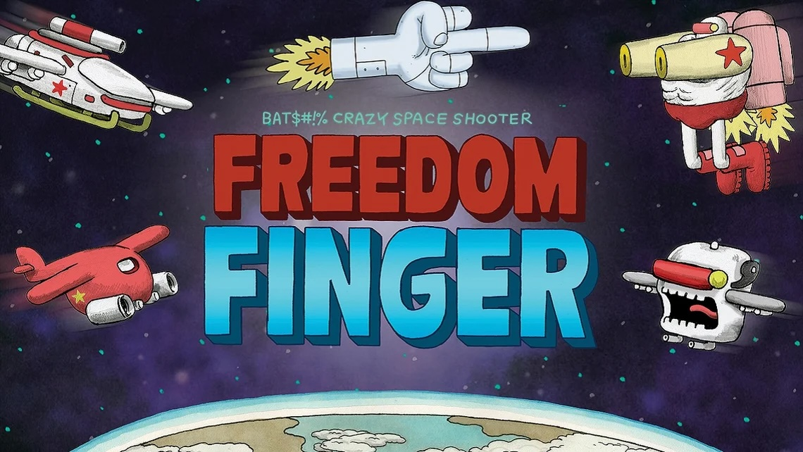

Wide Right Games
FREEDOM
FINGER

The Work
Story in
the action
I co-wrote the game's narrative and dialogue, shaping story and comedy around the rhythm of gameplay.
Working directly with the development team, I built story beats into the player experience and refined the writing through development, playtesting and narrative QA across platforms.